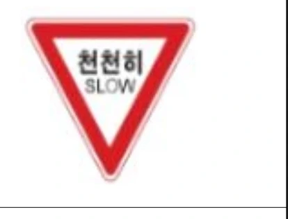

900. Дараах хориглох тэмдгийг байрлуулж болох газар аль вэ?

- ①Замын хөдөлгөөн зохицуулагддаггүй, хөдөлгөөн ихтэй уулзвар
- ②Огцом өгсүүрийн орой орчим
- ③Хөдөлгөөн зохицуулагддаггүй, баруун зүүн талыг харах боломжгүй уулзвар
- ④Гэрлэн дохиогүй төмөр замын гарам
Хариулт харах
Зөв хариулт
② Огцом өгсүүрийн орой орчим
Үндэслэл
Замын хөдөлгөөний тухай хуулийн хэрэгжилтийн журам [Хавсралт 6] 226 дугаар зохицуулалтын тэмдэг нь тээврийн хэрэгсэл удаан явах ёстой замын хэсэг буюу байршилд шаардлагатай цэгийн баруун талд суурилуулсан удаашралтай хурдыг зохицуулах тэмдэг.
Үндэслэлийн текст нь машин орчуулга.